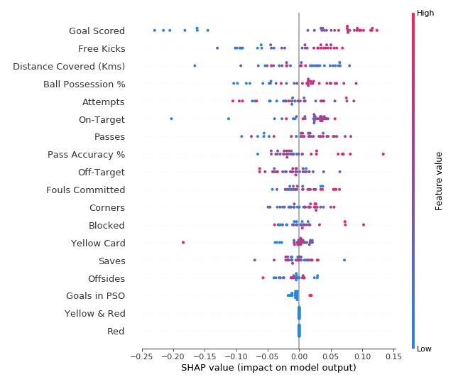

SHAP (SHapley Additive exPlanations)은 머신러닝 모델의 예측을 해석하는 데 사용되는 방법론입니다.
모델의 예측을 각 특성의 기여도로 분해하여 모델의 동작을 설명하려는 시도입니다.
SHAP는 게임 이론의 Shapley 값 개념에 기반을 두고 있습니다.
Shapley 값은 게임 이론에서 여러 플레이어가 도출한 결과에 대한 각 플레이어의 공평한 기여도를 계산하는 방법입니다.
이 아이디어를 머신러닝에 적용하여, 각 특성이 예측에 얼마나 기여하는지 계산합니다.
SHAP의 주요 장점은 특성 중요도에 대한 일관성을 제공한다는 것입니다.
이는 모델에 대한 보다 신뢰성 있는 설명을 제공하며, 모델 개선과 인사이트 제공에 도움이 됩니다.
SHAP는 다양한 종류의 모델에 적용될 수 있으며, 특히 복잡한 비선형 모델과 앙상블 모델에서 유용합니다.
축구 경기에서의 MOM(Man Of the Match)를 예측하는 모델로 SHAP를 알아보도록 하겠습니다.
SHAP를 이용해서 다음과 같은 질문에 대답 가능합니다.
“팀이 3골을 넣었다는 것이 예측에 얼마나 영향을 미치나요?”
이는 기준이 되는 골 수 대신 3골을 넣었다는 사실에 의해 예측이 얼마나 달라지나로 해석할 수 있습니다.
sum(SHAP values for all features) = pred_for_team - pred_for_baseline_values
즉, 모든 피처의 SHAP 값을 합산하여 내 예측이 기준선과 다른 이유를 설명합니다. 이렇게 하면 예측을 다음과 같은 그래프로 분해할 수 있습니다:

이 결과를 어떻게 해석할 수 있을까요?
0.7을 예측한 반면 base_value는 0.4979입니다.
예측을 증가시키는 특징 값은 분홍색으로 표시되며, 시각적 크기로 특징 효과의 크기를 알 수 있습니다. 예측을 감소시키는 특징 값은 파란색으로 표시됩니다. 가장 큰 영향은 골 득점이 2인 경우입니다. 볼 소유권 값도 예측을 낮추는 의미 있는 영향을 미칩니다.
import numpy as np
import pandas as pd
from sklearn.model_selection import train_test_split
from sklearn.ensemble import RandomForestClassifier
data = pd.read_csv('../input/fifa-2018-match-statistics/FIFA 2018 Statistics.csv')
y = (data['Man of the Match'] == "Yes") # Convert from string "Yes"/"No" to binary
feature_names = [i for i in data.columns if data[i].dtype in [np.int64, np.int64]]
X = data[feature_names]
train_X, val_X, train_y, val_y = train_test_split(X, y, random_state=1)
my_model = RandomForestClassifier(random_state=0).fit(train_X, train_y)5번째 행의 데이터를 사용해 SHAP를 살펴보겠습니다.
row_to_show = 5
data_for_prediction = val_X.iloc[row_to_show] # use 1 row of data here. Could use multiple rows if desired
data_for_prediction_array = data_for_prediction.values.reshape(1, -1)
my_model.predict_proba(data_for_prediction_array)array([[0.29, 0.71]])모로코에서 MOM이 나올 확률이 70%로 나타났습니다.
import shap # package used to calculate Shap values
# Create object that can calculate shap values
explainer = shap.TreeExplainer(my_model)
# Calculate Shap values
shap_values = explainer.shap_values(data_for_prediction)위의 shap_values 객체는 두 개의 배열이 있는 목록입니다.
첫 번째 배열은 부정적인 결과에 대한 SHAP 값이고, 두 번째 배열은 긍정적인 결과(MOM)에 대한 SHAP 값의 목록입니다.
일반적으로 예측은 긍정적인 결과를 예측하는 관점에서 생각하므로 긍정적인 결과에 대한 SHAP 값을 가져옵니다.
배열을 검토하는 것은 번거롭지만, shap 패키지는 결과를 시각화하는 좋은 방법이 있습니다.
shap.initjs()
shap.force_plot(explainer.expected_value[1], shap_values[1], data_for_prediction)단일 데이터가 아닌, 전체 데이터에서 각 feature들의 영향력을 보고 싶다면, shap.summary_plot()을 사용할 수 있습니다.
# Create object that can calculate shap values
explainer = shap.TreeExplainer(my_model)
# calculate shap values. This is what we will plot.
# Calculate shap_values for all of val_X rather than a single row, to have more data for plot.
shap_values = explainer.shap_values(val_X)
# Make plot. Index of [1] is explained in text below.
shap.summary_plot(shap_values[1], val_X)
몇 가지 예시로 위 그래프를 해석해겠습니다 :
이 모델은 빨간색과 노란색 및 빨간색 기능을 무시했습니다.
일반적으로 옐로카드는 예측에 영향을 미치지 않지만, 높은 값으로 인해 예측이 훨씬 낮게 나온 극단적인 경우가 있습니다.
골 득점 값이 높으면 예측이 높고, 값이 낮으면 예측이 낮았습니다.
SHAP는 계산 복잡도가 높아 매우 느리지만, xgboost의 경우는 예외입니다. 큰 데이터의 경우 xgboost로 모델을 만든 후 SHAP를 활용하면 적절한 결과를 얻을 수 있습니다.